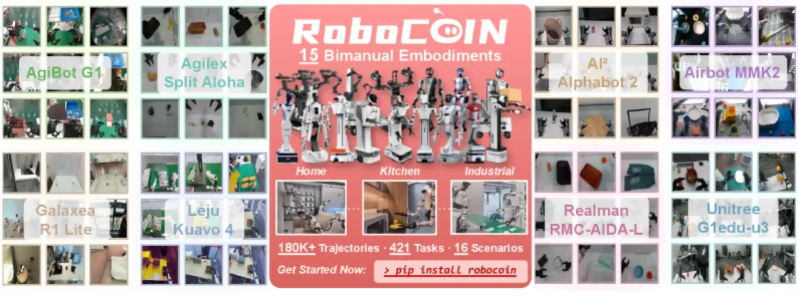
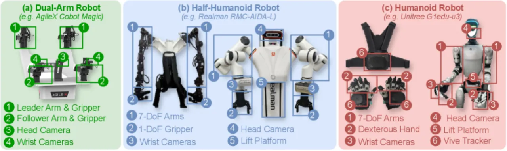
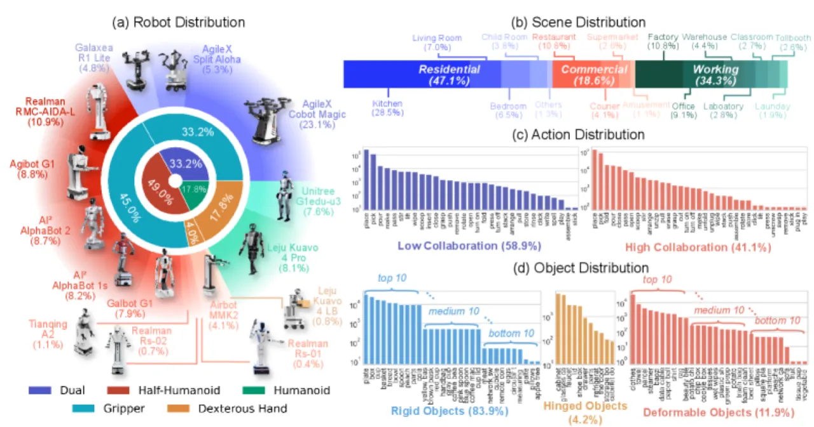
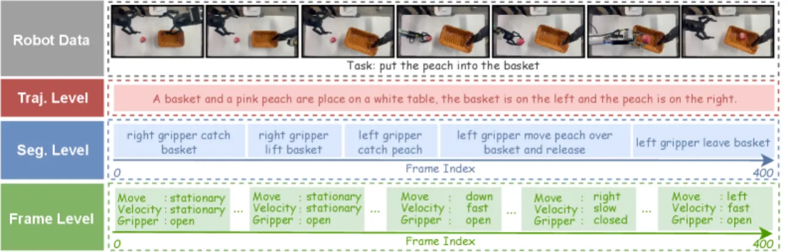
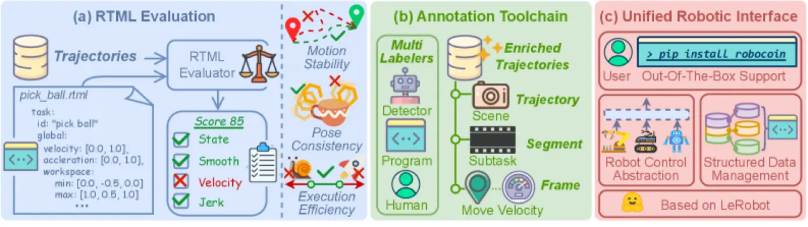
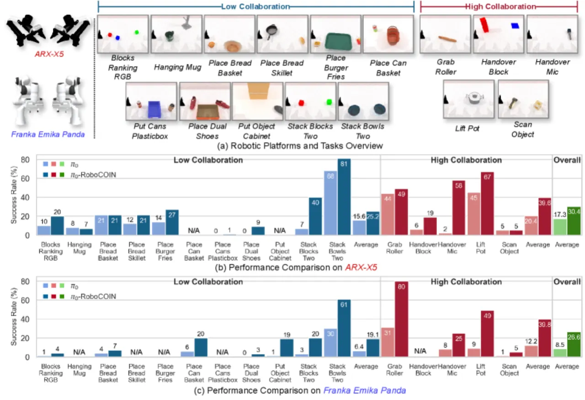
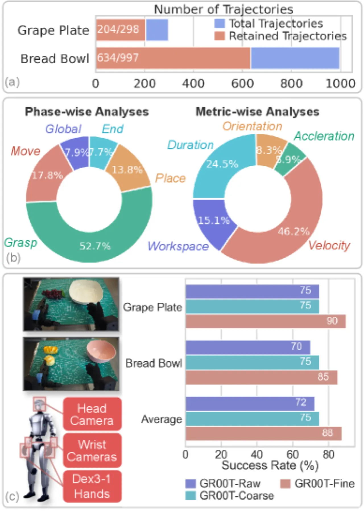

RoboCOIN 是首个覆盖 15 种机器人平台、收录超过 18 万条人类遥操作示教的开源大规模双臂操作数据集。配套分层标注体系（Capability Pyramid）与 RTML 质量过滤框架，在 RoboTwin 2.0 仿真基准及真实机器人上均取得显著性能提升。
双臂协作操作（bimanual manipulation）是机器人迈向通用操作能力的关键一步，却面临严重的数据瓶颈：现有数据集大多针对单一机器人平台、任务类型单一、缺乏高质量标注，且规模远不足以支撑大模型预训练。
"Existing datasets are often limited in scale, diversity, or quality, failing to capture the breadth of bimanual manipulation tasks required for general robot learning."



RoboCOIN 由三部分构成：大规模多平台双臂数据集本身、层级能力金字塔（Capability Pyramid）标注体系，以及 CoRobot 数据处理管线——其核心是机器人轨迹标记语言（Robot Trajectory Markup Language, RTML），用于自动化质量验证与过滤。


RTML 以 YAML 格式定义两类约束，对每条轨迹进行自动化验证：
39 种双臂协作动作归为两大类：
动作按功能分为四类：通用操作（General Manipulation）10 种、对象状态改变（Object State Change）9 种、对象关系改变（Object Relation Change）9 种、任务特定动作（Task-Specific）11 种。
实验在三类场景下验证 RoboCOIN 的价值：（1）RoboTwin 2.0 仿真基准上的跨本体策略迁移，（2）Realman RMC-AIDA-L 真实机器人上的分层标注收益，（3）Unitree G1edu-u3 上的 RTML 数据质量过滤效果。基准策略均为 π₀ 或 GR00T N1.5。

| 平台 / Platform | 基线（π₀） | +RoboCOIN（π₀-RoboCOIN） | 相对提升 |
|---|---|---|---|
| ARX-X5（全部任务） | 17.3% | 30.4% | +75.7% |
| ARX-X5（高协作任务） | — | — | +94.1% |
| Franka Emika Panda（全部任务） | 8.5% | 26.6% | +212.9% |
| 测试条件 | 基线（无 Pyramid） | +Capability Pyramid | 相对提升 |
|---|---|---|---|
| 分布内（In-distribution） | 28% | 43% | +53.6% |
| 分布外（Out-of-distribution） | 22.5% | 57.5% | +155.6% |
| OOD 性能下降幅度 | -43.8% | -17.9% | 鲁棒性显著提升 |

| 数据设置 | 任务成功率（相对原始数据） |
|---|---|
| 原始数据（Raw data） | 基准 |
| RTML 过滤后 | 提升（移除 35.3% 低质量轨迹） |
| GR00T-Fine（相位级约束） | +22.2% |
消融结果表明：（1）Capability Pyramid 的三级标注均有独立贡献，去掉任一层级均会导致性能下降；（2）RTML 过滤对 OOD 泛化的帮助尤为明显，说明数据质量比数据数量更重要；（3）跨平台预训练（cross-embodiment pre-training）的收益在高协作任务上更为突出，表明复杂协调动作更依赖大规模先验。
作者指出："Reliance on teleoperation may introduce inherent operator biases, leading to inter-operator variability in trajectory patterns." 不同操作员风格各异，导致同一任务的示教轨迹之间存在较大方差，可能影响策略学习的稳定性与泛化能力。
"Manual annotation presents a scalability bottleneck due to its high labor costs and potential for subjectivity, which may impact data consistency." 尽管采用了半自动标注管线，人工精修环节仍然是扩展数据规模的主要瓶颈，且主观性难以完全消除。
"The current RTML framework depends heavily on expert-defined heuristics, potentially constraining its flexibility when applied to niche tasks or novel robotic platforms." RTML 的约束规则由专家手工设计，对新型机器人平台或非常规任务的适用性有限，需要额外的专家介入来定义新规则。